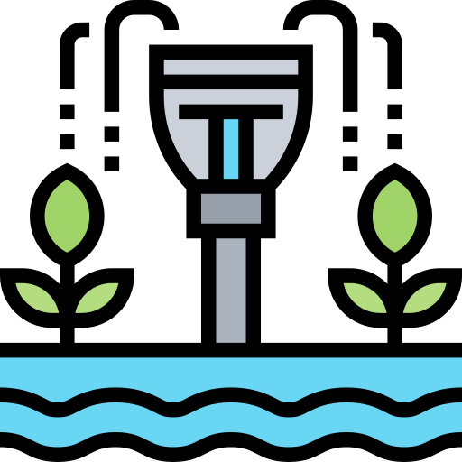

Irrigation Management in Nepal
Efficient irrigation systems are essential for Nepal's agricultural productivity. With over 60% of the population dependent on agriculture, the government is committed to modernizing irrigation infrastructure and promoting water-efficient farming practices.
Key Initiatives
- Construction of Canals: Over 1,000 km of new canals built in the last 5 years
- Drip Irrigation Systems: Subsidies for farmers to adopt water-saving technologies
- Farmer Training Programs: Workshops on sustainable farming practices
Impact on Agriculture
These initiatives have led to:
- Increased crop yields by 30% in targeted areas
- Reduced water wastage by 40%
- Improved livelihoods for over 500,000 farmers
Future Goals
The government aims to expand irrigation coverage to 90% of arable land by 2030, with a focus on sustainable water management.
Back to Home